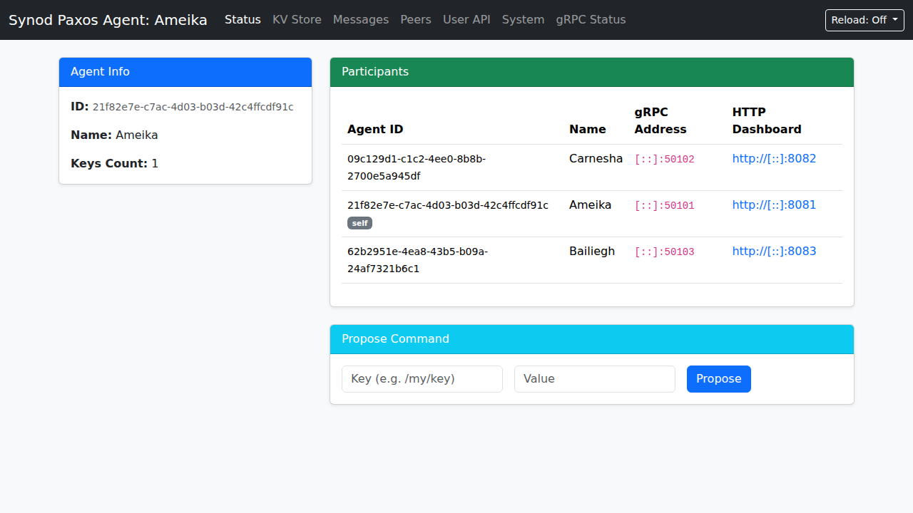

Distributed Consensus Made Simple
Synod is a high-performance distributed Paxos coordination agent written in Go. Manage highly available, synchronized Key-Value stores across network peers with ease.
Synod is a high-performance distributed Paxos coordination agent written in Go. Manage highly available, synchronized Key-Value stores across network peers with ease.

Everything you need for distributed coordination
Synod provides a robust, resilient foundation for building distributed systems that require absolute consistency and fault tolerance.
Standard Paxos consensus bound to Unix-path keys. Persisted reliably via SQLite backend.
Nodes can seamlessly join or leave the cluster via gRPC. Membership is managed within the KV store itself.
Acquire distributed locks on key paths securely. Operations are strictly rejected if a lock is held by another agent.
Background syncing recovers missing keys and resolves version conflicts automatically for eventual consistency.
Built-in HTTP dashboard to monitor participants, view the KV store, read RPC logs, and debug system performance.
Easily deployable single binary via Bazel. Dynamic port selection ensures agents can always find a free port to bind to.
# 1. Clone the repository
git clone https://github.com/filmil/synod.git
cd synod
# 2. Run the try_it script to start a 3-node cluster locally
./tools/try_it.bash
# Output:
Starting Agent 1 (Bootstrap)...
Starting Agent 2...
Starting Agent 3...
Cluster is running! Press Ctrl+C to stop.
View Agent 1: http://localhost:8081